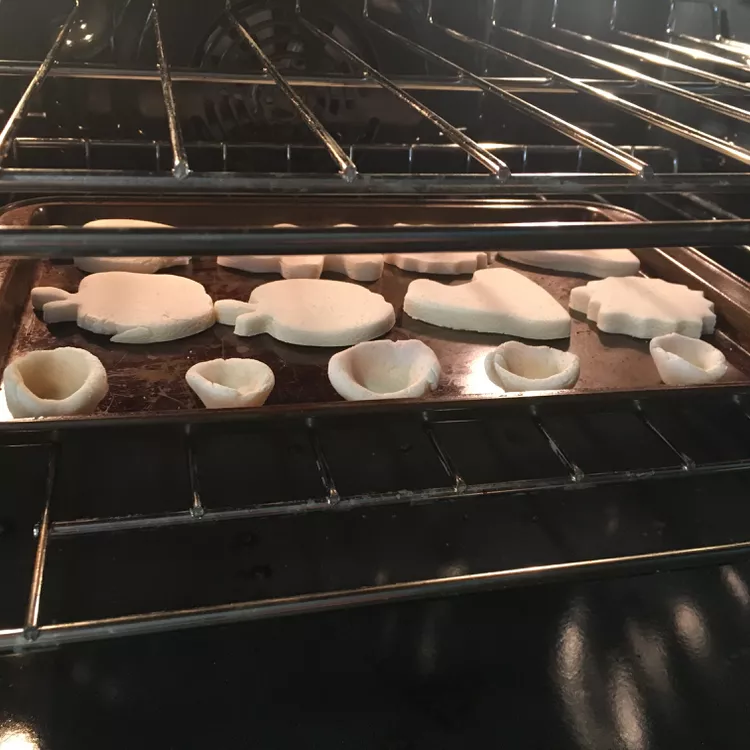

Bakers Clay

Make homemade ornaments and crafts with this easy to use clay recipe
Ingredients
- 4 cups of all purpose flour
- 1 1/2 cups water
- 1 cups salt
Steps
- Preheat oven to 350 degrees F
- Mix together flour, water, and salt in large mixing bowl
- Knead dough until smooth
- On a floured surface, roll out dough until roughly 1/8 inches thick. Use cookie cutters to cut desired shapes. Be sure to use toothpick or other utensil to create a hole at the top to thread ribbon to hang ornament
- Bake in preheated oven for 1 hour/li>
- Cool completely, decorate with paint and preserve with varnish if desired
photo and recipe credit to: All Recipes Bakers Clay